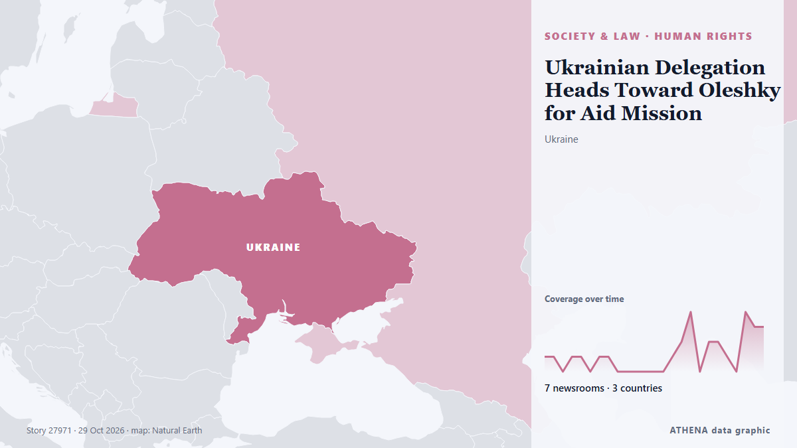

Ukrainian Delegation Heads Toward Oleshky for Aid Mission

A Ukrainian delegation led by Human Rights Commissioner Dmytro Lubinets set off toward Russian-occupied Oleshky on Thursday, Oct. из Kyiv Post
Независимые источники: 7 изданий в 3 странах, с 23 окт.; первым сообщил TASS (English); освещение идёт на спад. ATHENA оценивает риск как низкий (1.1/10), прежде всего из-за тяжести описываемого ущерба и качества доказательств. Уверенность — 79 % (высокая); подтверждают независимые источники: 7 изданий, средняя надёжность источников — 79 %. СМИ по странам: Украина (19), Россия (7), Болгария (1). Освещение: с 23 окт. по 29 окт., 148 ч.
Почему это важно: Полномасштабное вторжение России в Украину началось в феврале 2022 года. Мониторинг следит за боевыми действиями, ударами по инфраструктуре и дипломатией вокруг войны так, как их освещает мировая пресса.
Что изменилось: 10 новых сообщений от 5 редакций за 24 часа до 29 окт..
Первый заголовок: Both sides observing ceasefire in Oleshky, Lubinets says
Заголовки приводятся на английском языке, как они были опубликованы.
Коротко в цифрах
Отобрано, оценено и написано по опубликованной методологии ATHENA. Ни один редактор не вмешивается в отдельные события. Как это создаётся ›
| 23 Oct 17:17 UTC | 1 |
|---|---|
| 23 Oct 23:17 UTC | 1 |
| 24 Oct 05:17 UTC | 0 |
| 24 Oct 11:17 UTC | 1 |
| 24 Oct 17:17 UTC | 1 |
| 24 Oct 23:17 UTC | 0 |
| 25 Oct 05:17 UTC | 1 |
| 25 Oct 11:17 UTC | 1 |
| 25 Oct 17:17 UTC | 0 |
| 25 Oct 23:17 UTC | 0 |
| 26 Oct 05:17 UTC | 0 |
| 26 Oct 11:17 UTC | 0 |
| 26 Oct 17:17 UTC | 0 |
| 26 Oct 23:17 UTC | 0 |
| 27 Oct 05:17 UTC | 1 |
| 27 Oct 11:17 UTC | 2 |
| 27 Oct 17:17 UTC | 4 |
| 27 Oct 23:17 UTC | 0 |
| 28 Oct 05:17 UTC | 2 |
| 28 Oct 11:17 UTC | 2 |
| 28 Oct 17:17 UTC | 1 |
| 28 Oct 23:17 UTC | 0 |
| 29 Oct 05:17 UTC | 4 |
| 29 Oct 11:17 UTC | 3 |
| 29 Oct 17:17 UTC | 3 |
| 24 Oct 17:08 UTC | 0.0 |
|---|---|
| 28 Oct 19:03 UTC | 1.1 |
| 29 Oct 21:23 UTC | 1.1 |
Откуда эти цифры
Значимость
Риск
Уверенность
Освещение — кто сообщил и когда
заголовок в оригинале · открывает источник- TASS (English) · РоссияRussian ombudswoman says humanitarian aid to people in Alyoshki is top priority
- TASS (English) · РоссияKostroma paratroopers deliver humanitarian aid to Alyoshki
- Ukrinform (English) · УкраинаLubinets discusses details of Oleshky humanitarian mission with Russian ombudswoman
- TASS (English) · РоссияRussia, Ukraine fulfil their commitments toward Alyoshki ceasefire — Russian ombudswoman
- Kyiv Post · УкраинаUkraine, Russia Agree Ceasefire Timetable for Oleshky Mission
- Ukrinform (English) · УкраинаLubinets calls for information about people in Oleshky who need help
- Novinite · БолгарияRussia Halts Fire Near Ukraine's Oleshky for Aid Mission, Immediately Strikes Kyiv
- Ukrinform (English) · УкраинаCeasefire in Oleshky being fully observed, Lubinets says
- Ukrainska Pravda (English) · УкраинаUkraine and Russia are adhering to ceasefire agreement in Oleshky
- TASS (English) · РоссияCeasefire in Alyoshki to end at 7:59 p.m. GMT on November 1 — ombudswoman
- Ukrinform (English) · УкраинаOleshky humanitarian mission could be extended to other communities – Lubinets
- Ukrinform (English) · УкраинаBoth sides observing ceasefire in Oleshky, Lubinets says
- Ukrainska Pravda (English) · УкраинаUkraine's human rights commissioner: No incidents in Oleshky since ceasefire began 30 hours ago
- TASS (English) · РоссияNo violations recorded since Alyoshki ceasefire establishment — human rights commissioner
- Ukrainska Pravda (English) · УкраинаUkraine's human rights commissioner: Oleshky ceasefire has brought Kherson back to life – photo
- Ukrinform (English) · УкраинаUkrainian, Russian forces observing ceasefire in Oleshky – Lubinets
- Kyiv Post · УкраинаDemining Begins on Oleshky Aid Routes as Truce Holds
- Ukrainska Pravda (English) · УкраинаUkraine's human rights commissioner: Ceasefire in Oleshky has lasted 54 hours, humanitarian aid due Friday
- Ukrainska Pravda (English) · УкраинаUkrainian human rights commissioner and delegation head to Oleshky
- Ukrinform (English) · УкраинаUkrainian delegation heads toward Russian-occupied Oleshky – Arakhamia
- Ukrinform (English) · УкраинаNo ceasefire violations in Oleshky, humanitarian aid delivery planned for Friday – Lubinets
- Kyiv Post · УкраинаUkrainian Delegation Heads Toward Oleshky for Aid Mission
- Ukrainska Pravda (English) · УкраинаUkrainian human rights commissioner's office explains why he agreed to travel to Oleshky via Russia
- Meduza (English) · Россия‘If this works, it will be the first real ceasefire across a large stretch of the front’: Russia and Ukraine maintain truce in occupied Oleshky for more than two days
- Kyiv Independent · УкраинаRoute demining completed in Russian-occupied Oleshky as humanitarian convoy prepares to enter, Ukraine's ombudsman says
- Meduza (English) · РоссияResidents of Russian-occupied Oleshky have until Friday afternoon to leave. Aid distribution for those who stay is scheduled to begin under a temporary ceasefire.
- Kyiv Post · УкраинаOleshky Aid Convoy Ready to Depart as Demining Is Completed